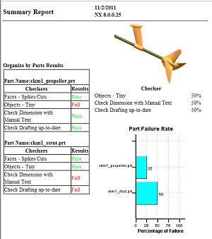
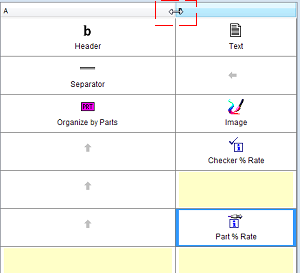
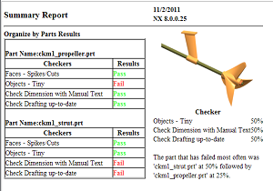

右击汇总报告选项卡并选择编辑。
在报告编辑器窗口中，双击部件百分率报告单元。
指定下列特性：
|
属性 |
属性值 |
|
显示模式 |
条形图(Bar Chart) |
|
宽度(像素) |
300 |
点击确定。
点击更新报告。

注意到虽然列的大小是均匀分布，但是这个练习中使用的窗口宽度看起来好像左侧的列被挤压一样。
在报告编辑器对话框的列标题行中，将列分隔符向右拖动些许距离。

双击部件百分率报告单元，然后在显示模式列表中，选择文本。
点击确定以关闭部件百分率编辑器对话框，然后点击更新报告。

在报告编辑器对话框中，点击确定以关闭对话框。